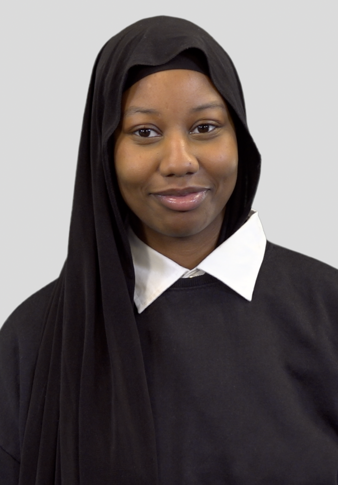
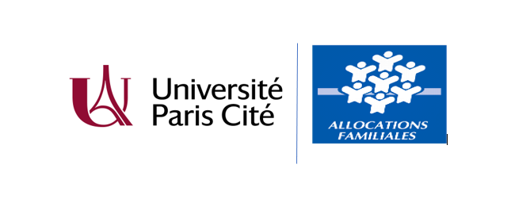
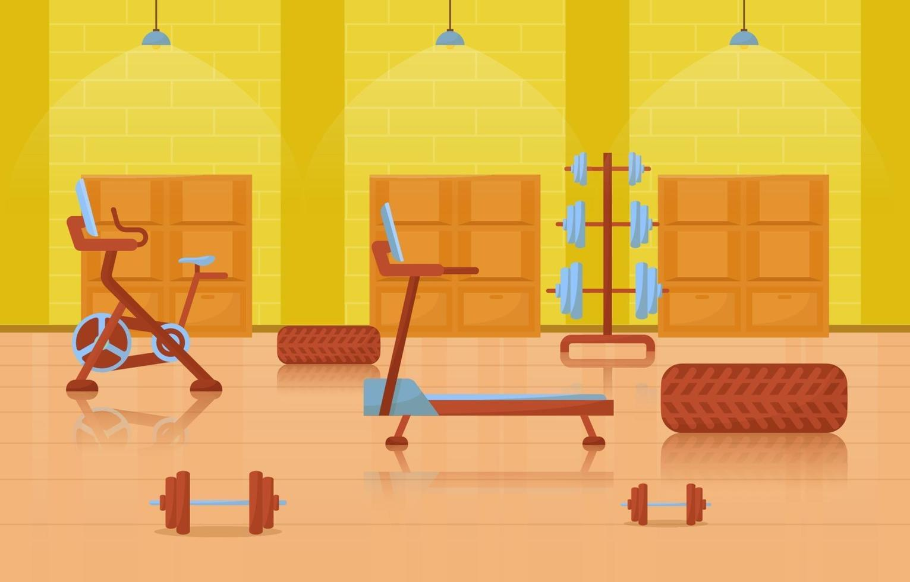
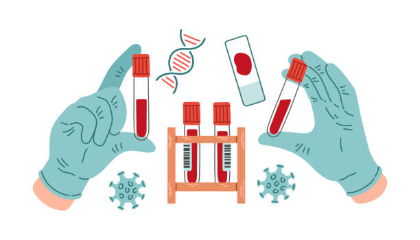

Analyse, modélisation et visualisation
qui transforment la complexité
en décisions claires.

À propos
Étudiante en BUT Sciences des Données à l'IUT de Paris, je suis passionnée par la transformation des données brutes en insights actionnables. Rigoureuse et curieuse, j'aime explorer les données pour y révéler des tendances, construire des analyses statistiques solides et produire des visualisations claires qui aident à la prise de décision. Mon parcours m'a conduite à travailler aussi bien sur des problématiques métier: reporting, pilotage d'indicateurs que sur des sujets académiques en modélisation et séries temporelles.
BUT Sciences des Données
IUT de Paris, Université Paris Cité · 2024–2027
Baccalauréat Général
Spécialités Maths & SES · Lycée Hélène Boucher, Paris · 2021–2024

Dashboard décisionnel — Caisses d'Allocations Familiales
Développement d’un dashboard décisionnel dédié au pilotage des performances des Caisses d’Allocations Familiales (CAF) à l’aide d’Excel, de SAS et Power BI. Ce projet met en place un tableau de bord interactif permettant de sélectionner dynamiquement une CAF et de visualiser instantanément ses indicateurs clés. L’analyse s’appuie sur le suivi de KPI stratégiques (objectifs, résultats, écarts et évolutions temporelles) ainsi que sur l’identification des CAF en situation d’alerte grâce à des seuils de performance. Les visualisations interactives facilitent l’interprétation des données et constituent un véritable outil d’aide à la décision.
Automatisation d'une Pipeline de Traitements Statistiques
Pipeline SAS orchestrée via Excel : macros statistiques industrialisées, génération automatique de rapports multi-périodes.
Analyse du Championnat de France de Street
Modélisation statistique sur 219 observations : corrélations âge/genre/performances, régressions polynomiales et visualisations.

Comportement d'Achat — Matériels Sportifs
Analyse de données du comportement d'achat selon le modèle de produit. Statistiques descriptives et visualisation. Tests d'hypothèses sur grands échantillons. Analyse d'indépendance (Chi², Fisher exact) et de corrélation. Recommandations pour soutenir les équipes métier dans leurs prises de décision.

Détection de Profils Biologiques Atypiques
Analyse longitudinale de deux biomarqueurs (ferritine et fer sérique) sur 30 individus. Trois méthodes de détection d'anomalies : z-scores univariés, saisonniers et multivariés. Restructuration des données, analyse descriptive, visualisation avec ggplot2 et comparaison selon différents seuils. Présentation orale devant jury.
Prévision de Production d'Électricité
Construction et nettoyage de jeux de données énergétiques. Analyse exploratoire et décomposition de séries temporelles (tendance / saisonnalité). Implémentation et calibration de modèles ARIMA. Évaluation comparative via RMSE, AIC et autres indicateurs. Analyse de l'interprétabilité et justification méthodologique. Rédaction d'un rapport scientifique en anglais avec recommandations.
Statistiques
Info. Décisionnelle
Outils & Langages
Langues
Soft Skills